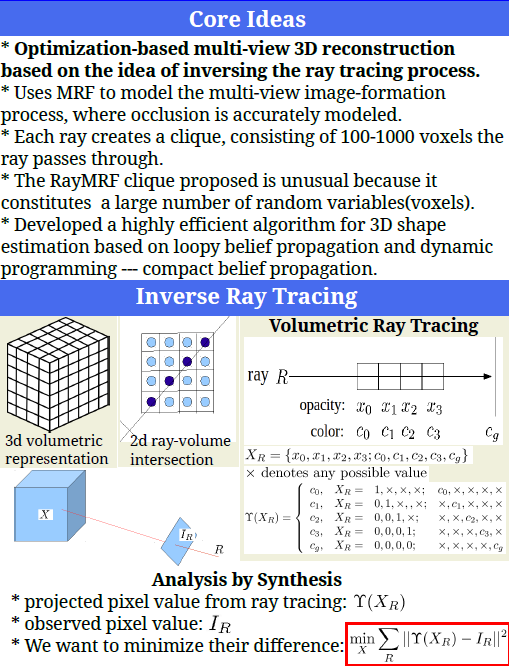
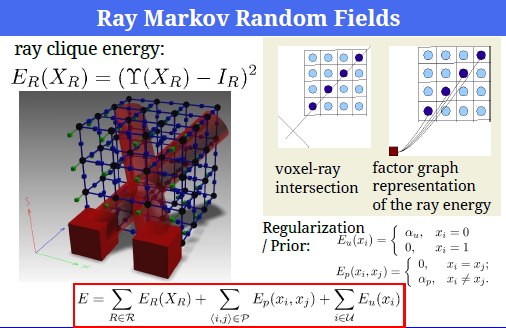
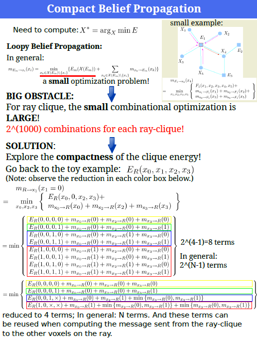
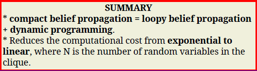
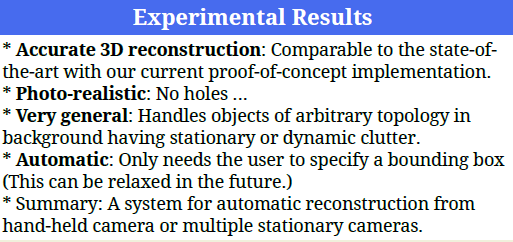
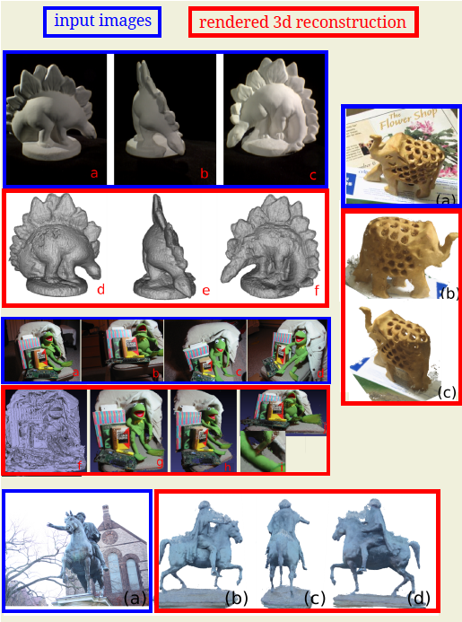

| about me | curriculum vitae | research | demos | courses |
demo 1 | demo 2
Ray Markov Random Fields for Image-Based 3D Modeling: Model and Efficient Inference
OverviewThis project studies the problem of inferring scene's 3D geometry and appearance from multiple 2D images with statistical methods. We tackle the problem by exploring the nature of the image generation process -- ray tracing, within the analysis by synthesis framework. We first build a statistical model to describe the image generation process, and put all the constraints (including image observation and prior knowledge about the geometry) into the Markov Random Fields (MRF) formulation. This MRF model is really unusual in the sense that the ray-clique, which models the image generation process, consists of thousands of random variables (in our case, voxels), instead of two to dozens in the usual MRF. This presents a big challenge to the inference algorithm. In this work, a highly optimized belief propagation algorithm (named as compact belief propagation) is developed to tackle the challenging optimization/estimation problem, by exploring the compactness structure of the clique energy. The framework and algorithm developed is capable of handling general and complex scenes, verified by extensive experiments on varieties of standard and home-grown datasets. Keypoint: Occlusion/visibility is accurately modeled and a linear time algorithm is found to estimate the occlusion/visibility.       3D Reconstruction GalleryNote: The results below are reconstructed with 8M-voxel (about 200^3) resolution. The image resolution used is about 400x300. All the images are auto-calibrated with Bundler.
Publications:
|
Last updated on Jul. 6, 2010
{kind=link}